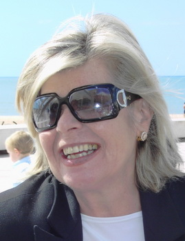

Cándida Moles Navas
Cándida Moles Navas  Cándida Moles Navas
Cándida Moles Navas 
 Haz clic aquí para detalles de la Familia de Cándida con Carlos Martín Izquierdo
Haz clic aquí para detalles de la Familia de Cándida con Carlos Martín Izquierdo
This page is within a frameset. View the entire genealogy report of Moles Navas families, or surname index of Moles Navas pedigrees or report summary of Moles Navas heritage from "Árbol Genealógico de Manolo y Amalia".
Genealogy Search.
© 2006 GenoPro Inc. All Rights Reserved.